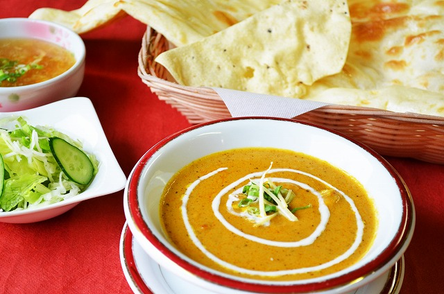
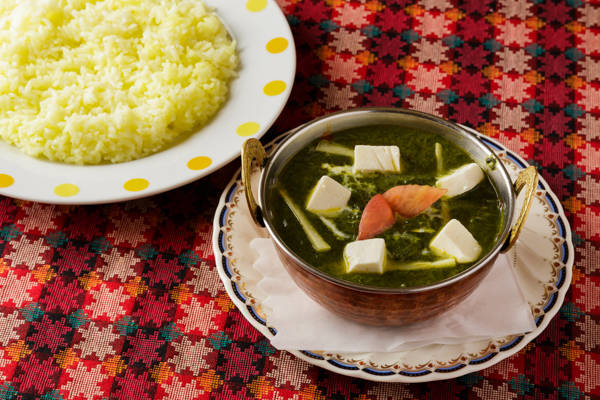
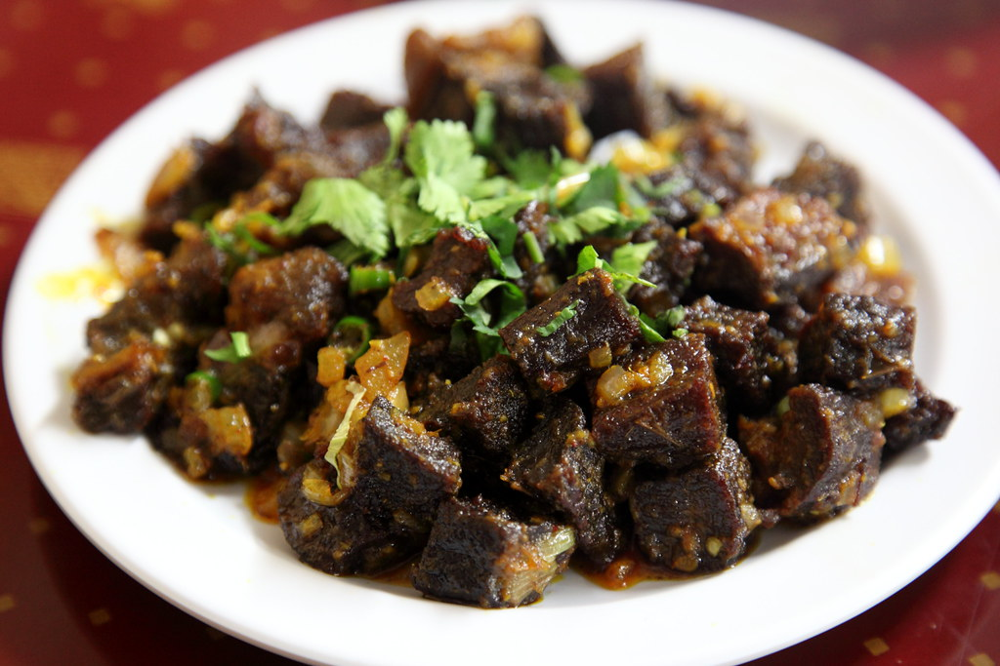
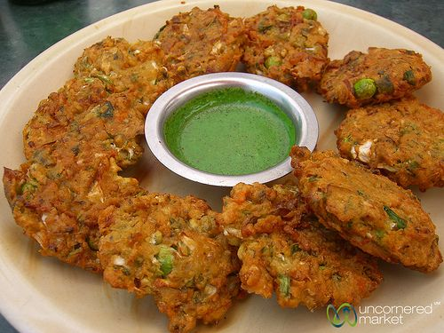
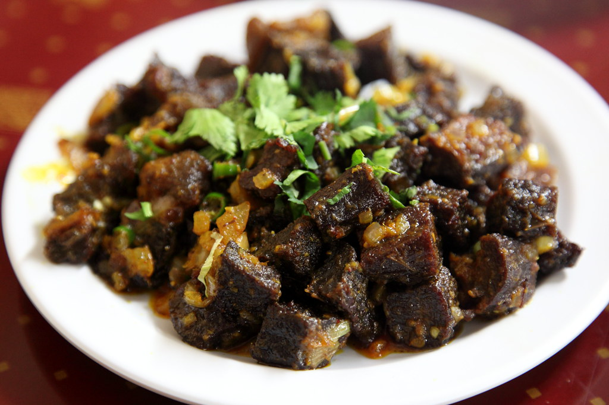
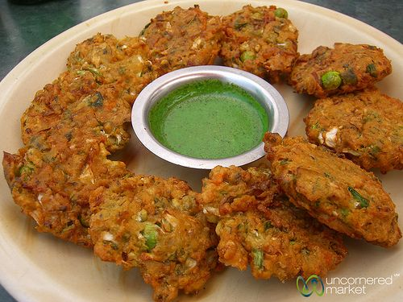
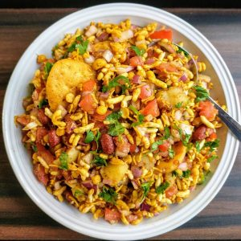
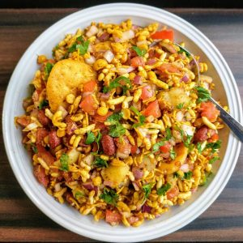
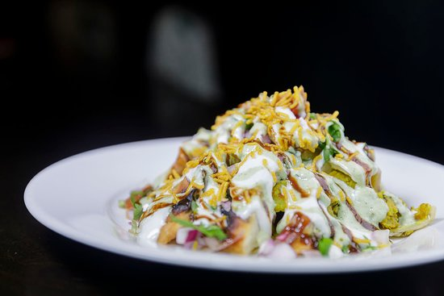
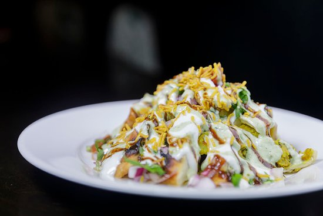

ランチとして
ダールバァト

DAL BHAT POWER The authentic nepali cuisine. Nepalis are used to eat it everyday . Either the lunch or dinner its suitable the either way.It is like an everyday food for the nepalis and family. Even the foreigners living in Nepal loves it too. Cooked in the nepali way which includes rice .dal ,meat vegetable curry ,pickles,salads.
カレーwith ナン


カレー ライス
ディナーとして
dinner

DAL BHAT POWER
The authentic nepali cuisine. Nepalis are used to eat it everyday .
Either the lunch or dinner its suitable the either way.It is like an everyday food for the nepalis and family. Even the foreigners living in Nepal loves it too. Cooked in the nepali way which includes rice .dal ,meat vegetable curry ,pickles,salads.
スナックとして

 




 

 

DAL BHAT POWER The authentic nepali cuisine. Nepalis are used to eat it everyday . Either the lunch or dinner its suitable the either way.It is like an everyday food for the nepalis and family. Even the foreigners living in Nepal loves it too. Cooked in the nepali way which includes rice .dal ,meat vegetable curry ,pickles,salads.